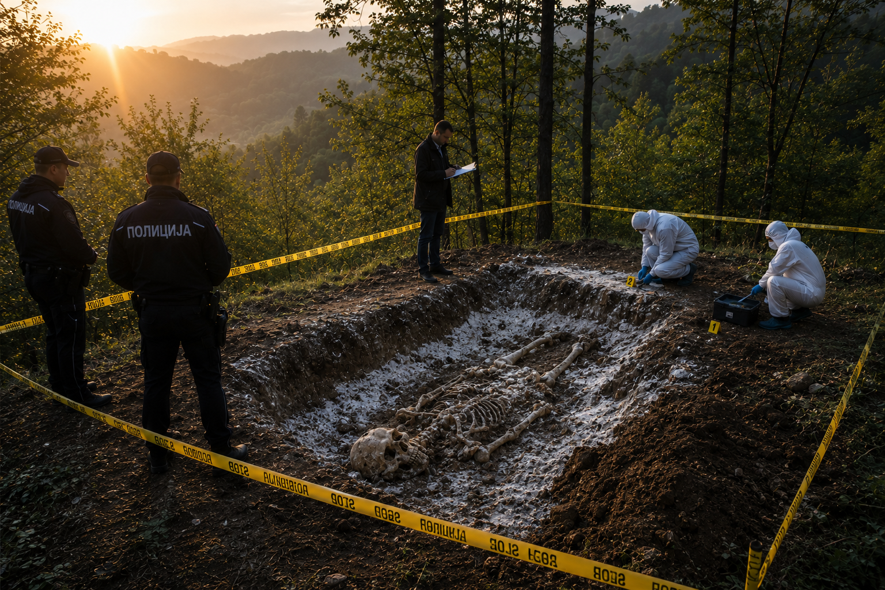

MUP
MINISTARSTVO UNUTRAŠNJIH POSLOVA
Kriminalistički informacioni sistem
GIS modul · bezbedna veza
0%
AUTORIZACIJA USPEŠNA
Policijski inspektor Nikola Radić
PRISTUP ODOBREN
MUP
Kriminalistički GIS
Uprava kriminalističke policije · Interni sistem
Predmet
K-0426/26
Satelitski GIS prikaz
44.3118 N · 20.5324 E
Forenzička dokumentacija
Fotografija mesta pronalaska
×
×

DOKAZ · FOTO 01
Fotografija je automatski preuzeta kao
Slika_pronadjenog_tela.png
.
Fotografija je evidentirana u predmetu K-0426/26.